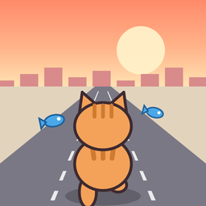

ねこねこランナーズ
ネコが町を走りぬけるランゲーム（iPhone）
サポート
3本の道を走るネコを、スワイプで操作して障害物をよけながら、どこまで走れるかをきそうゲームです。
- 左右にスワイプすると、となりの道に移ります
- 上にスワイプ（またはタップ）でジャンプ。低い障害物をこえられます
- 下にスワイプでスライディング。上にある障害物の下をくぐれます
- 高い障害物は、となりの道によけるしかありません
- 700mごとにステージが変わります（全8ステージ）
よくある質問
- 音が出ません
- iPhoneの消音スイッチ（着信/消音スイッチ）がオフになっているか確認してください。タイトル画面や、走っているときの家のボタンから開くメニューで「効果音：オン」「音楽：オン」になっているかも確認してください。音楽と効果音は、それぞれ別にオン・オフできます。
- 途中でやめたい・一時停止したい
- 走っているときに左上の家のボタンを押すと、ゲームが止まってメニューが出ます。「つづける」で再開、「タイトルにもどる」でタイトルに戻れます（その回にひろったさかなはもらえます）。
- ミッションとデイリーミッションのちがいは？
- ミッションは3つずつ出て、3つクリアするごとにランクが上がり、もらえるさかなが増えます。デイリーミッションは毎日0時に新しくなり、3つ全部クリアするとボーナスがもらえます。タイトル画面の「ミッション」や、走っているときのメニューから確認できます。
- 「動画を見て つづきから」が出ません
- 300m以上走ってぶつかったときに、1回の挑戦につき1度だけ表示されます。通信状況によっては、動画の準備が間に合わず表示されないことがあります。
- 広告の表示を減らせますか？
- 全画面の広告は、ゲームオーバー4回に1回、前の広告から2分以上たっているときだけ表示されます。「動画を見て つづきから」を選んだあとは、次の全画面広告がお休みになります。
- 機種変更すると記録はどうなりますか？
- ゲームの記録はiPhoneの中にだけ保存しています。iCloudバックアップから新しいiPhoneへ復元すると、記録も引き継がれます。アプリを削除すると記録も消えます。
- トラッキングの許可を変えたい
- iPhoneの「設定」＞「プライバシーとセキュリティ」＞「トラッキング」から変更できます。
お問い合わせ